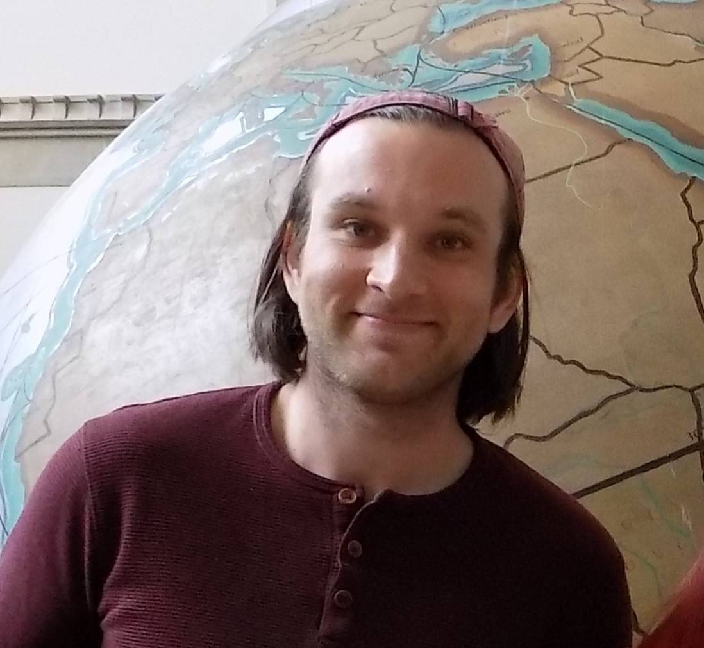

Home Page for Connor Malin
I am a postdoc at the Max Planck Institute in Bonn. I did my Ph.D. at Notre Dame under the supervision of Mark Behrens. I research interactions between homotopy theory and geometry. Currently I am interested in the relations between Goodwillie calculus, orthogonal calculus, and manifold calculus. These relations often manifest themselves in terms of Koszul duality, which I also actively research.

E-mail: malin [at] mpim-bonn [dot] mpg [dot] de
Curriculum Vitae (CV)
Publications and preprints:
-
Unstable 1-semiadditivity as classifying Goodwillie towers. 2025.
arxiv
-
Unstable homotopy groups and Lie algebras. 2024. to appear in Philosphical Transactions A.
arxiv. joint with Mark Behrens
-
Koszul duality and a classification of stable Weiss towers. 2024.
arxiv. joint with Niall Taggart
-
One point compactifications of configuration spaces and the self duality of the little disks operad. 2024. to appear in Algebraic & Geometric Topology.
arxiv
-
Koszul self duality of manifolds. 2023. Journal of Topology.
arxiv
-
The stable embedding tower and operadic structures on configuration spaces. 2022. Homology, Homotopy and Applications.
arxiv
-
An elementary proof of the homotopy invariance of stabilized configuration spaces. 2022. Proceedings of the AMS.
arxiv
Here are some slides and notes covering my current and past research:
-
The unreasonable effectiveness of right modules in homotopy theory. University of Bonn Topology Seminar, Bonn. 2025. PDF
We discuss some interesting applications of right modules over operads to homotopy theory.
-
Semiadditive geometry and classifications of Goodwillie towers. Operads and Calculus. Queen's University, Belfast. 2025. PDF
We describe under what situations polynomial functors are classified by divided power structures. We use this to study localizations of spaces and 1-semiadditivity.
-
A covariant manifold calculus in the style of Goodwillie. Victoria Topology Seminar. 2024. PDF
We describe a setting for covariant functor calculus which naturally intertwines the settings of Ayala-Francis, Arone-Ching, and classical Goodwillie calculus.
-
Koszul Duality and Functor Calculus. Stockholm Topology Seminar. 2024. PDF
We describe some Arone-Ching type results for functor calculus in the categories of algebras over an operad and in the category of vector spaces and injections.
-
Koszul Duality and Manifold Calculus. Advances in Homotopy Theory IV. 2023. PDF
We describe a lift of the theory of Poincare duality spaces and Spivak normal fibrations to operads and apply it to the right modules which show up in manifold calculus.
There are several sign errors which occur in my paper ``The stable embedding tower and operadic structures on configuration spaces'' which I correct in this errata.